| name | Class | distinct | %NAs | %Blanks |
|---|---|---|---|---|
| accountNumber | character | 5000 | 0 | 0.00 |
| customerId | character | 5000 | 0 | 0.00 |
| creditLimit | numeric | 10 | 0 | 0.00 |
| availableMoney | numeric | 521916 | 0 | 0.00 |
| transactionDateTime | character | 776637 | 0 | 0.00 |
| transactionAmount | numeric | 66038 | 0 | 0.00 |
| merchantName | character | 2490 | 0 | 0.00 |
| acqCountry | character | 5 | 0 | 0.58 |
| merchantCountryCode | character | 5 | 0 | 0.09 |
| posEntryMode | character | 6 | 0 | 0.52 |
| posConditionCode | character | 4 | 0 | 0.05 |
| merchantCategoryCode | character | 19 | 0 | 0.00 |
| currentExpDate | character | 165 | 0 | 0.00 |
| accountOpenDate | character | 1820 | 0 | 0.00 |
| dateOfLastAddressChange | character | 2184 | 0 | 0.00 |
| cardCVV | character | 899 | 0 | 0.00 |
| enteredCVV | character | 976 | 0 | 0.00 |
| cardLast4Digits | character | 5246 | 0 | 0.00 |
| transactionType | character | 4 | 0 | 0.09 |
| echoBuffer | character | 1 | 0 | 100.00 |
| currentBalance | numeric | 487318 | 0 | 0.00 |
| merchantCity | character | 1 | 0 | 100.00 |
| merchantState | character | 1 | 0 | 100.00 |
| merchantZip | character | 1 | 0 | 100.00 |
| cardPresent | logical | 2 | 0 | 0.00 |
| posOnPremises | character | 1 | 0 | 100.00 |
| recurringAuthInd | character | 1 | 0 | 100.00 |
| expirationDateKeyInMatch | logical | 2 | 0 | 0.00 |
| isFraud | logical | 2 | 0 | 0.00 |
| transactionTime | POSIXct | 776637 | 0 | 0.00 |
Case of Study: Transactions Analysis
Note
Credit card fraud is a significant challenge for banks and can occur in many ways, ranging from individual stolen cards to large-scale breaches involving compromised card data. Using a dataset of transactions labeled with an isFraud indicator, the goal is to develop a predictive model that can identify whether a transaction is fraudulent.
Introduction
This document serves as an example of a report for a FinTech company. It aims to present commented code along with a step-by-step process.
Data Loading
For this analysis, we will utilize the transaction dataset available on the FinTech page.
Describe the Structure of the Data
The dataset contains 786,363 observations and 30 variables. Initially, I examined the variable names, their classes, and the percentage of missing values (NAs) for each variable in the data frame.
At first glance, it seemed that missing values were not an issue. However, upon further inspection, I discovered that six variables contained censored data that were left blank(” “). These variables will not be included in the report but could have been useful if not censored. The following tables provide basic descriptive statistics categorized by variable types.
Transactions and clients.
Account number and customer ID allow to identify the clients. There are 5,000 unique clients. It seems there is a one-to-one relationship between accounts and customers. I expected to see multiple cards for the same account.
On average, they have 157 transactions each. The median of 50 suggests a right-tail distribution, with few customers having many transactions.
| Transactions | Accounts | Customers |
|---|---|---|
| 786363 | 5000 | 5000 |
| Mean.Transaction | median.Transaction | Min.Transaction | max.Transaction |
|---|---|---|---|
| 157.27 | 50 | 1 | 32850 |
Summary of Numeric Variables
Multiple variables are associated with the account holder, credit limit, available money, and current balance. The latter adjusts after each transaction. availableMoney shows negative values, which could be due to an overdraft or insufficient funds.
The main variable associated with the transaction is transactionAmount, which has only 66,038 unique values. The transaction average is 136.99. This suggests that clients typically conduct transactions for small amounts. Lastly, the database has a categorical variable encoded as a binary (1=Fraud). The fraud rate in the database is approximately 2%.
Other variables associated with the transaction present information about the merchant’s name and type, how the transaction was conducted (POS), if the CCV and expiration date were entered correctly. Some of these variables are encoded without a label. A more in-depth analysis and discussion are done during the data exploration and modeling process in the following sections
| Variable | Nulls | Unique | Min | Max | Mean | NonNA_Records | Total_Records |
|---|---|---|---|---|---|---|---|
| creditLimit | 0 | 10 | 250,00 | 50.000,00 | 10.759,46 | 786.363 | 786.363 |
| availableMoney | 0 | 521.916 | -1.005,63 | 50.000,00 | 6.250,73 | 786.363 | 786.363 |
| transactionAmount | 0 | 66.038 | 0,00 | 2.011,54 | 136,99 | 786.363 | 786.363 |
| currentBalance | 0 | 487.318 | 0,00 | 47.498,81 | 4.508,74 | 786.363 | 786.363 |
| isFraud | 0 | 2 | 0,00 | 1,00 | 0,02 | 786.363 | 786.363 |
Histogram of the amounts for each transaction
The histogram below shows that the transactions range from $0 to $2011, and the distribution shape is right-skewed, indicating many small transactions and few large ones.
Most transactions are small, but fraud tends to occur in larger, less frequent purchases—suggesting fraudsters exploit high-value opportunities
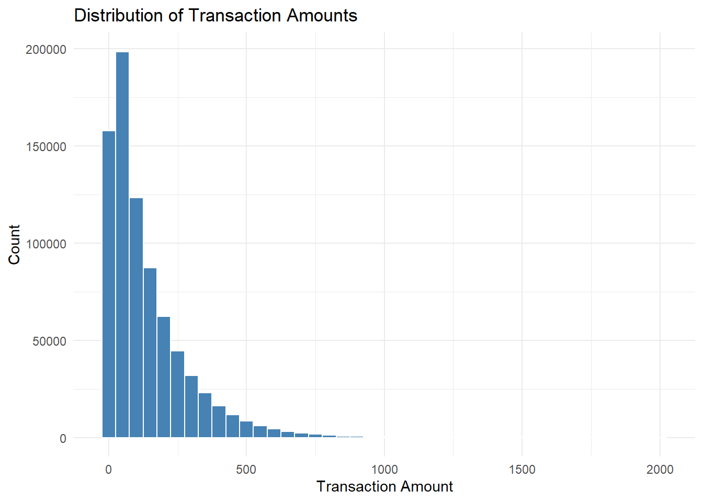
The Mode is near 0, and if we exclude the zero the amount is $8.21.
transactionAmount n
1 $8.21 132A look at outliers
Outliers may indicate errors, large purchases, or fraud attempts. I used a boxplot to identify extreme values, values larger than 500 are more unusual.
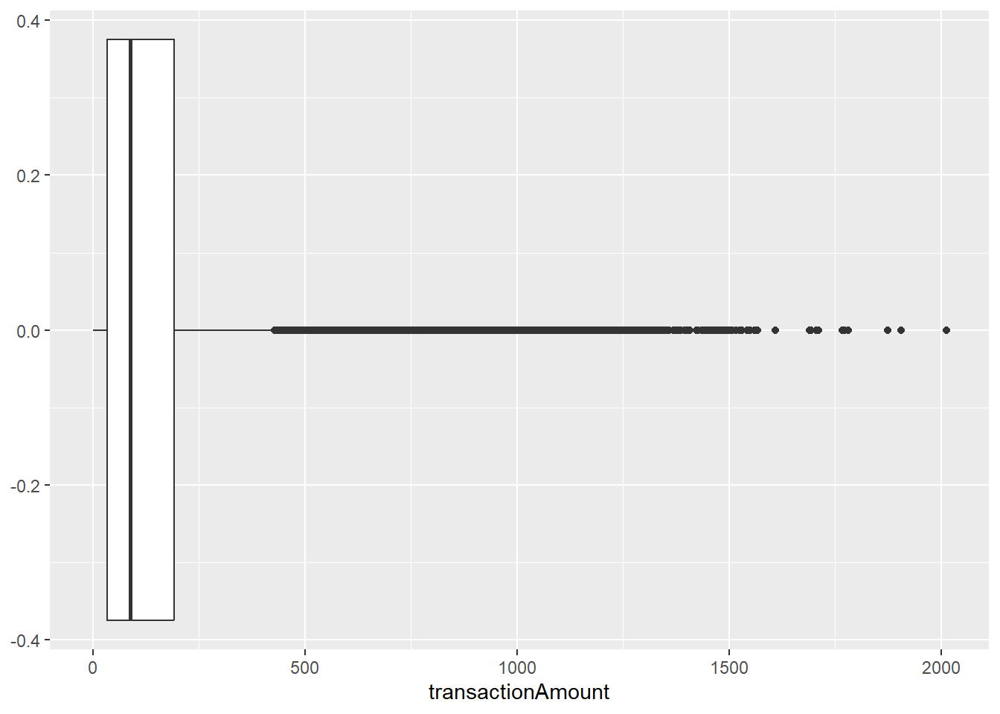
One of the things I noticed was that there were almost no transactions over $1500, this might reflect a spending limit.
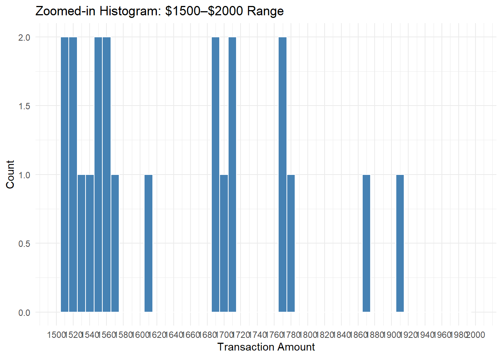
Hypotheses
To summarize so far, clients typically make small transactions that reflect everyday purchases. In contrast, larger expenditures may indicate potential fraud.
Data Wrangling - Duplicate Transactions
This section answers the identification of programmatically reverse transactions and multiple swipes.
Identifying reversed transaction
I define a reverse transaction when a purchase is followed by a reversal:
| Cases | Total Amount ($) | Cases (%) | Amount (%) |
|---|---|---|---|
| 17757 | 2666479 | 2.26 | 2.48 |
Error detection: There are some returns that do not have a prior purchase.
| dup_key | purchase_count | reversal_count |
|---|---|---|
| 101376441_0_cheapfast.com_128_6683 | 0 | 1 |
| 101380713_0_Lyft_551_7553 | 0 | 1 |
| 101380713_5.03_sears.com_551_7553 | 0 | 1 |
| 101661970_18.15_American Airlines_266_2796 | 0 | 1 |
| 101876201_0_gap.com_371_4725 | 0 | 1 |
Identifying multi-swipe:
Multi swipe, when a vendor accidentally charges a customer’s card multiple times within a short time span.
| Multi-Swipe | Cases | Total Amount ($) | Cases (%) | Amount (%) |
|---|---|---|---|---|
| 1 | 20156 | 2201824 | 2.56 | 2.04 |
Did you find anything interesting about either type of transaction?
Identifying reverse transactions can be challenging, especially if they are not clearly marked in the system. It can be difficult to detect identical purchases that lack a defined time limit. However, if we correctly identify the relevant columns, we can distinguish between actual reverses and transactions that are not reverses, as there was no prior purchase, as previously demonstrated.
Modeling Fraud
As mentioned in the problem prompt, fraud poses a significant issue for banks. It can manifest in various forms, ranging from someone stealing a single credit card to large batches of stolen credit card numbers being used online. Additionally, substantial compromises can occur when credit card numbers are stolen from merchants through tools like credit card skimming devices.
The following sections deals with modeling strategies to predict credit card fraud. I consider the target variables “isFraud”, which is a categorical value, 1 in the case when the transaction was tagged as a fraud.
The following sections describe the process to create features useful for detecting fraud, my modeling strategy and results.
Data Engineering and feature selection:
Merchants and transactions amounts
First I estimated densities by the target variable to identify if any variable could separate the fraud cases. Initial result suggest that transaction amounts tend to be larger for fraudulent transactions, and that the other variables associated with the account (Credit limit,balance and availability) may not be good predictors.
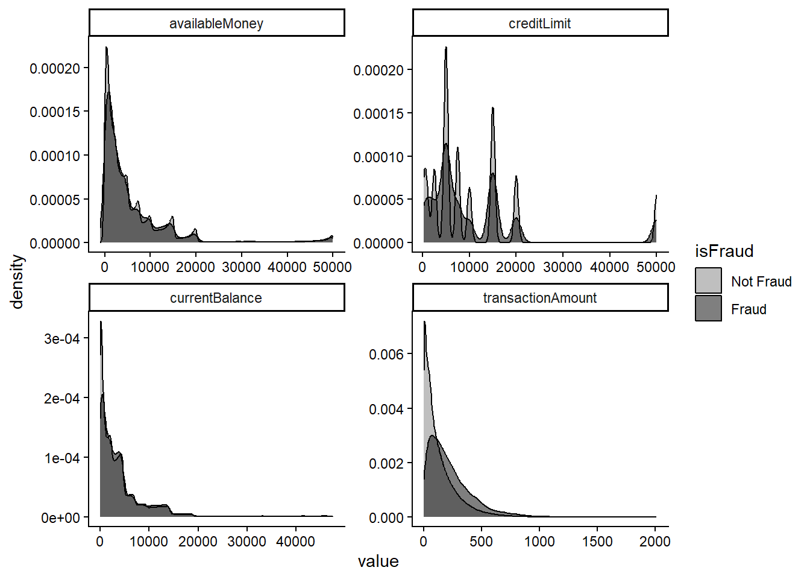
To further explore features that could be useful for predicting fraud, I examined the different types of transactions and merchants, focusing in particular on their associated amounts.
Airlines, rideshares, online retailers, and gift transactions are likely to be fraudulent. Notably, online retailers also represent a significant portion of the total transactions in the database.
Across different types of merchants, larger transactions are, on average, more likely associated with fraud. Since the definition of a “large transaction” varies by merchant type, I standardized the transaction amounts in the modeling step.
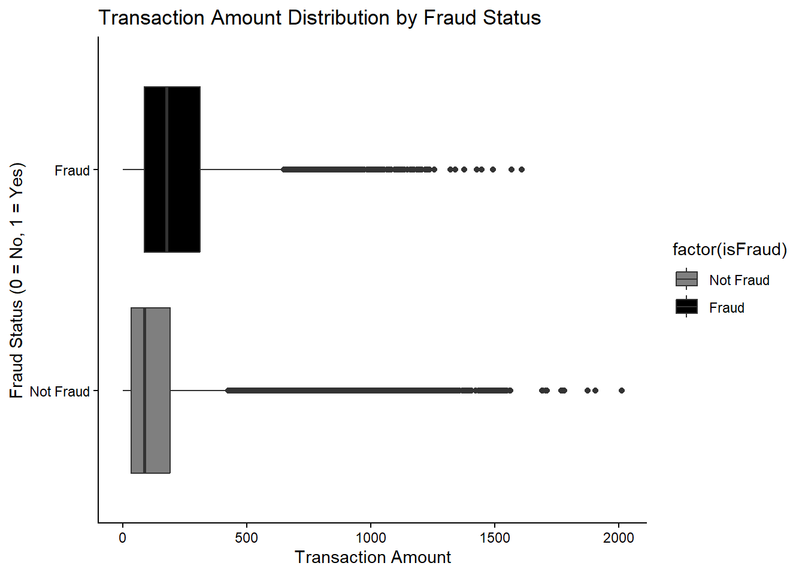
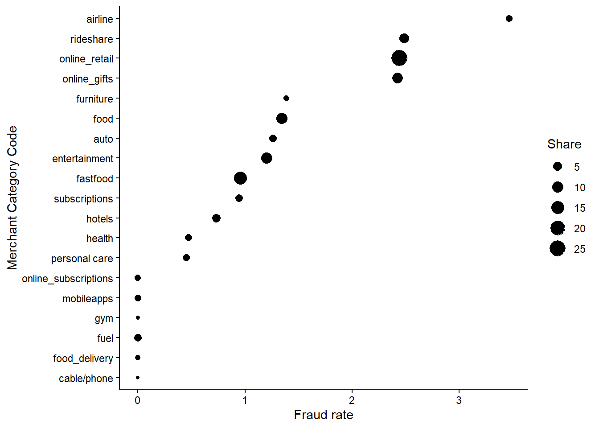
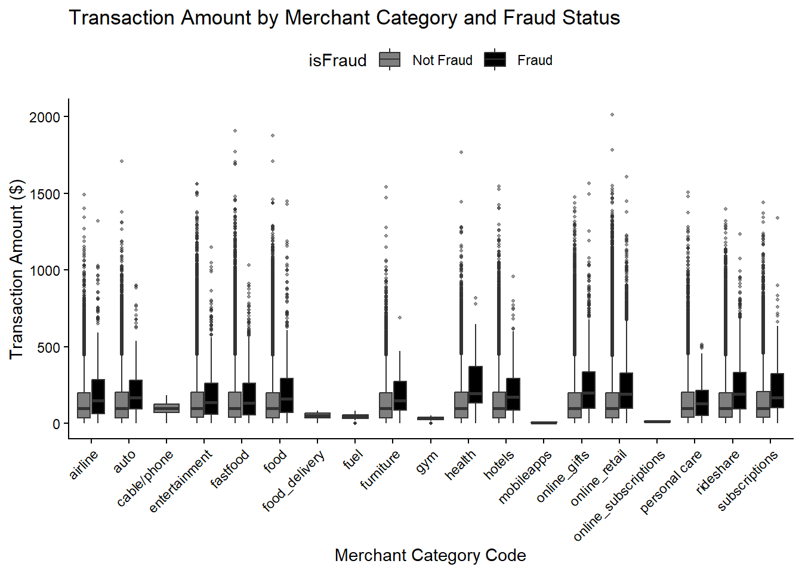
Next, I explored merchant names. There are 2,490 unique merchant names in the database; however, these don’t necessarily represent different companies, as some fast food chains share the same company name but are counted as different venues. I wrote a short function to extract the company names (cleanMerchant).
The next plot illustrates the relationship between the number of transactions per merchant and the fraud rate, highlighting the top five merchants with the highest fraud rates. It appears that certain companies may be more susceptible to fraud or may be preferred by scammers, as they show a higher number of fraud cases despite having a lower volume of transactions.
While identifying merchants at risk could be useful, it may harm business relationships and lead to a reduction in the volume of transactions so I won’t use it for my model.
It might be interesting to go deeper into which franchises of popular merchants are associated with a higher fraud rate, as specific areas could be more susceptible to fraud. However, this information was censored in the database.
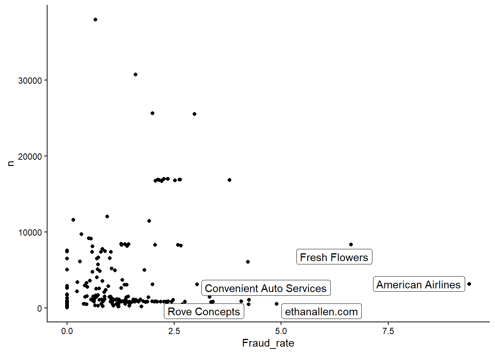
Transactions type and information.
One of the variables that could be used to identify a fraudulent transaction is the errors made by the user during the transaction. In particular, the database records the CVV entered from the card. I computed the Hamming distance as a measure of error (0 means all characters match, while 3 means none match). It is less likely that a user would make a significant error, but these cases are more often associated with fraud.
Another variable I identified, which is similar in nature, is the expiration date. I hoped that a mismatch in this area could suggest fraud; however, this was not the case, or I may be interpreting the variable incorrectly.
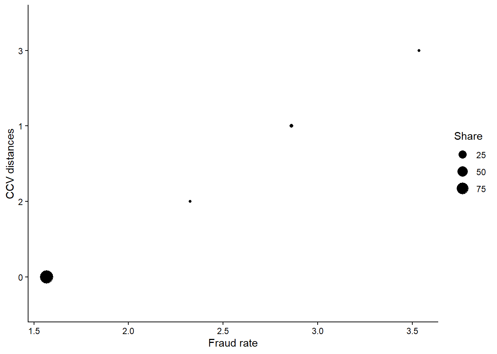
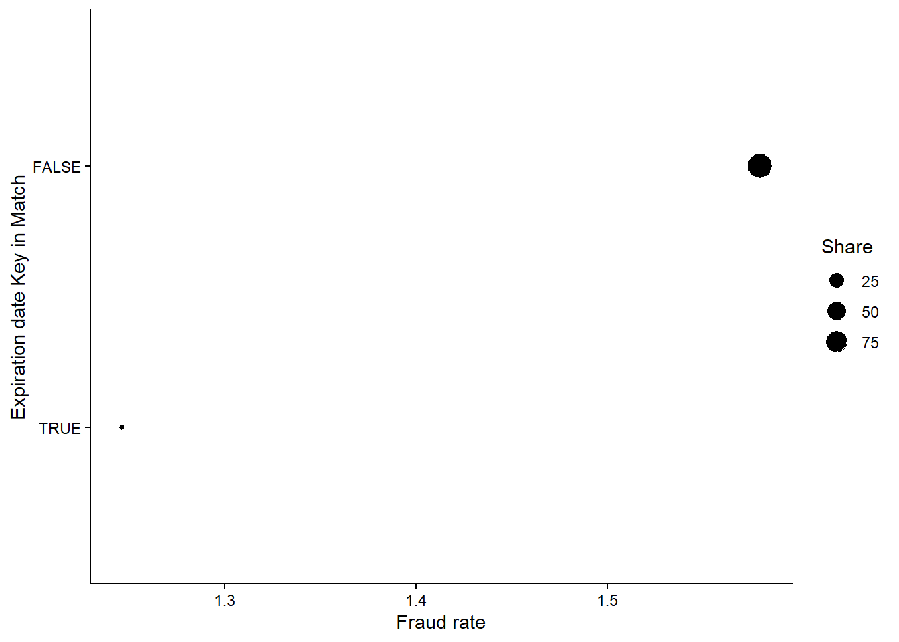
Other types of variables, such as the use of POS, could be relevant. Having a NA (blank value) was associated with a higher risk of being a fraudulent transaction. Understanding the codes and their meaning could be useful to produce a better algorithm.
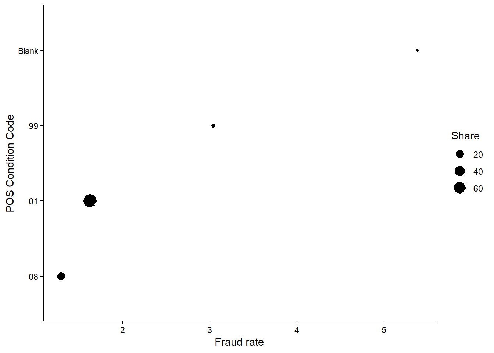
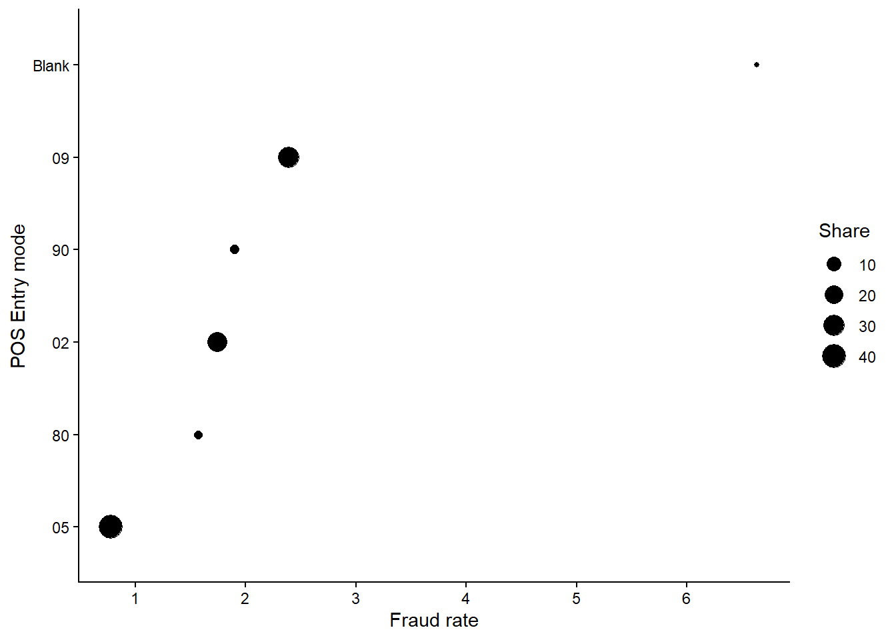
Other variables associated with the time of the transaction were created and explored.
Creating a model
While each transaction can be considered independently, they are are associated with the same clients. The following sections builds a proof of concept for a client based prediction model.
We create a client database
I followed a traditional Train-test split (70-30) but we have client data so I first sample IDs and then within IDs sample transactions.
The next section standardize the transaction amount by transaction type to better detect outliers.
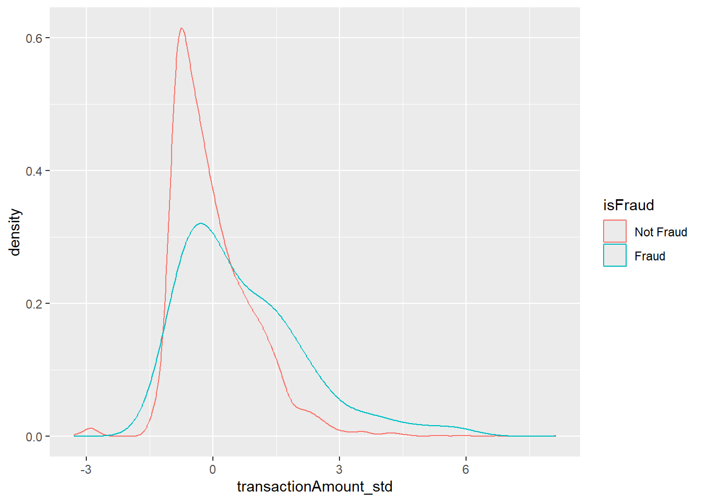
Not Fraud Fraud
98.8 1.2
Not Fraud Fraud
98.257143 1.742857 Methods and resampling:
I used K-fold cross-validation to evaluate how well a model predicts unseen data before using the test set. In this case, I used k=5 folds.
To convert categorical data into binary variables, I used one-hot encoding.
The target variable, Fraud, is infrequent. This results in an unbalanced dataset, with fraud cases representing less than 2% of the total.
I use two resampling method to address this: downsampling and the Synthetic Minority Oversampling Technique (SMOTE). The downsampling method reduces the size of the majority class (no fraud) to match the size of the minority class (fraud). Meanwhile, SMOTE oversamples the minority class by generating additional examples from the fraud cases in the training dataset before fitting the model.
In summary:
K-fold cross-validation to assess model performance on unseen data before using the testing set.
One-hot encoding to transform categorical variables into a numerical/binary format.
Downsampling and SMOTE to tackle the problem of class imbalance in the dataset.
Feature selection: All the columns were explored, and new variables were created. I selected the ones that were more related to fraud and were also meaningful from a business perspective. The selected variables are as follows:
- CVV distance (new variable)
- Standardized transaction amount (transformation of the original Transaction Amount)
- Weekday and hour (new variable)
- Merchant category code, as some types of transaction where more likely a fraud.
Modeling Algorithm for Classification Problem:
I tested tree based methods (Random Forest and XGBoost) and a logistic Regression and selected the one that demonstrated better performance.
Random forest is a classic method of ensemble learning that tend to perform nicely in classification problem. Unlike, random forest that can be classified as bagging, I also used Xgboost which sequentially adds trees to correct the errors made, resulting in a stronger model.
However, tree-based models can be challenging to interpret; therefore, when presenting a model to non-technical users, it is often preferable to use one that is easier to understand so I included a logistic regression as a benchmark. This method establishes a relationship between fraud and the features selected using a linear combination of the features.
The following plot presents the AUC resulting of the combination of re sampling and models used in k-folds to asses the model performance.
The best results are asociated with SMOTE and Logistic Regression and Random Forest.
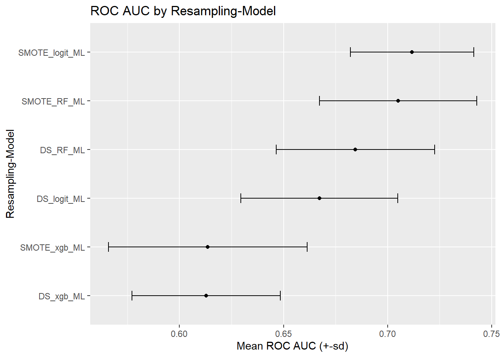
Top. Performance
Using the RF and logistic regresion with a SMOTE resampling step, as the best modelos I used the test hold out data to compute the confusion matrix and illustrates the errors made by the model.
Random Forest confusion matrix:
Truth
Prediction N Y
N 1369 12
Y 113 6Logit confusion matrix:
Truth
Prediction N Y
N 942 7
Y 540 11After examining the confusion matrix for the logit model, I find that 63.5% of predictions are correct. However, since we are working with imbalanced data, I also calculated the true positive rate (recall). The model correctly identifies 61.1% of fraud cases, but the false positive rate is quite high. The model is flagging 540 transactions as fraud, only 11 are truly fraud cases (about 2%).
In comparison, the random forest model shows an accuracy of 91.4%, but its recall is only 33.3%, resulting in a false rate of 4.8%.
Choosing the best model between the logit model and the random forest model depends on the specific goals: the importance of precision versus recall.
Decision Criteria: - If the primary goal is to minimize false negatives and ensure that most fraud cases are identified, then the logit model may be the better choice despite its higher false positive rate. - Conversely, if the focus is on achieving greater overall accuracy and reducing false alarms, the random forest model could be better, provided that the cost of missed fraud is acceptable.
Next Steps:
I began my analysis focusing on clients rather than solely transactions because I wanted to incorporate more features associated with the previous behavior of the client. For example, create an alert if we are dealing with a new merchant or if the client makes a large purchase that is 10-20% higher than the previous month by merchant Category. This could be further refined in a latter report and would prove more valuable than a transaction based model.